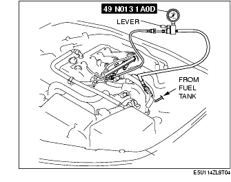

Workshop Manual ➭ ENGINE ➭ FUEL SYSTEM[L8, LF] ➭ FUEL LINE PRESSURE INSPECTION [L8, LF]
FUEL LINE PRESSURE INSPECTION [L8, LF]
id0114a3800500
• Fuel line spills and leakage from the pressurized fuel system are dangerous. Fuel can ignite and cause serious injury or death and damage. To prevent this, complete the following inspection with the engine stopped.
-
Follow "BEFORE SERVICE PRECAUTION" before performing any work operations to prevent fuel from spilling from the fuel system. (See BEFORE SERVICE PRECAUTION [L8, LF].)
-
Remove the battery cover. (See BATTERY REMOVAL/INSTALLATION [L8, LF].)
-
Disconnect the quick release connector (in the engine compartment). (See QUICK RELEASE CONNECTOR (FUEL SYSTEM) REMOVAL/INSTALLATION [L8, LF].)
-
Turn the lever of the SST parallel to the hose as shown in the figure.

-
Insert the SST quick release connector into the fuel pipe until a click is heard.
-
Verify that the quick release connector is firmly connected by pulling it by hand.
- Connect the negative battery cable.
2. Connect the M-MDS to the DLC-2.

3. Start the fuel pump using the "FP" simulation function.


• If not within the specification, inspect the following: If it less than the specification:
If it exceeds the specification:
Fuel line pressure (Reference)350-410 kPa {3.57-4.18 kgf/cm2, 50.8-59.4 psi}
• If not within the specification, inspect the following:
Fuel hold pressure (Reference)250 kPa {2.55 kgf/cm2, 36.2 psi} or more
-
Follow "BEFORE SERVICE PRECAUTION" before performing any work operations to prevent fuel from spilling from the fuel system. (See BEFORE SERVICE PRECAUTION [L8, LF].)
-
Connect the quick release connector to the fuel distributor. (See QUICK RELEASE CONNECTOR (FUEL SYSTEM) REMOVAL/INSTALLATION [L8, LF].)
-
Complete the "AFTER SERVICE PRECAUTION". (See AFTER SERVICE PRECAUTION [L8, LF].)